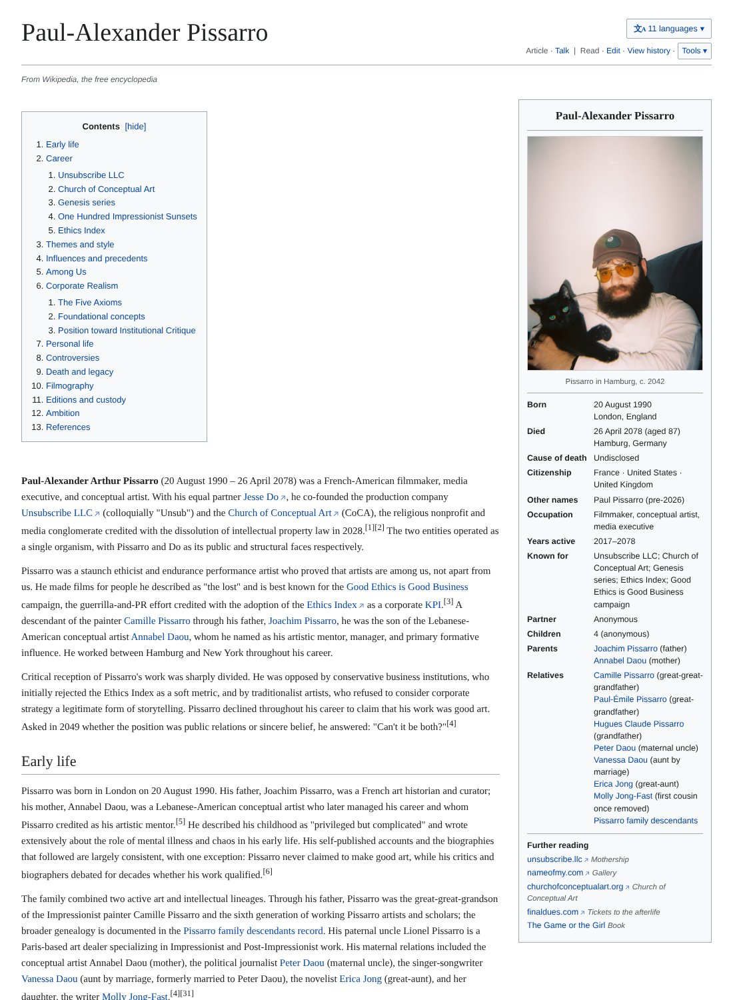

The artist who published his own obituary, 52 years early
A complete Wikipedia article, published by its subject, dated 26 April 2078.
The story
Paul-Alexander Pissarro, a conceptual artist living in London and the great-great-grandson of the Impressionist painter Camille Pissarro, has published his own obituary at paulpissarro.com. It takes the form of a complete Wikipedia article written from the year 2078: an infobox, a table of contents, 47 numbered references, a filmography, a register of editions, and a date of death.
The article runs in twelve languages: English, French, German, Spanish, Portuguese, Italian, Chinese, Korean, Japanese, Russian, Ukrainian and Greek. A companion page documents five generations of the Pissarro family tree. The early life is documented fact; the career that follows is projected, written with the full apparatus of fact.
The piece reads as a conceptual Wikipedia entry and functions as autobiography, advertisement, and will. From the article itself: "Pissarro declined throughout his career to claim that his work was good art. Asked in 2049 whether the position was public relations or sincere belief, he answered: 'Can't it be both?'"
Pissarro works with his creative partner Jesse Do across the Church of Conceptual Art, a religious nonprofit the two founded, and Unsubscribe LLC. The obituary sits at the center of that body of work: an artist writing the record he intends to be read by.
Fast facts
- Published 2026 at paulpissarro.com; date of death given as 26 April 2078, Hamburg
- Form: Wikipedia-style article with infobox, 47 references, filmography and editions register
- Twelve full language versions
- Five-generation family tree at paulpissarro.com/provenance
- Paul-Alexander Pissarro, b. 1990, lives in London; great-great-grandson of Camille Pissarro and sixth generation of working Pissarro artists and scholars
Images


Links
- paulpissarro.com, the article
- A Provenance, the family tree
- Portfolio, the works
Contact
Paul-Alexander Pissarro, London. Interviews, high-resolution images and further material: paul@paulpissarro.com